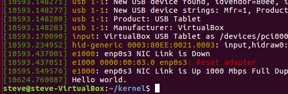
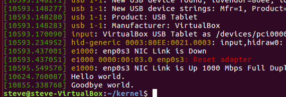

Writing Your First Kernel Module
So we've already built the kernel from source and even modified the source code. While these were some pretty cool parlor tricks, isn't it about time we learned something useful?
Well, I can't promise that, but today we'll take a step in the right direction by building a Linux kernel module.
The Linux kernel is structured so that you can add extended functionality without modifying the core source. These added modules can be linked in as the source is compiled or added dynamically. The one we write today will be inserted dynamically, adding itself and running without a system reboot.
While writing a kernel module is definitely safer than modifying the source, it can still mess up your system a lot more than a user space application, so proceed with caution.
This post is Part 3 of a series on the Linux kernel.
User Space vs. Kernel space
Hold on - What was that last part about a safe space? Oh, you mean user space!
In the world of kernel developers, where wise old men tug their beards and discuss edgy topics like Round Robin scheduling and virtual memory schemes, there are but two paths that a budding programmer can follow - that of the User Space, and that of the Kernel Space. Choose wisely.
User space applications cover most things that we think of for software development - these are your browsers, email clients, video games, web servers, and so forth. These applications are like the flashy skyscrapers in a big city; everyone knows and talks about them, but nobody seems to remember the infrastructure that supports them. Even a mighty tower must have a solid base.
Kernel space code provides that foundation. It involves everything that makes the operating system run, hosting and providing an execution environment for all user applications. System calls, memory management, process management, scheduling, threading, device management, and much more are all handled in the kernel space. Much as the best bridges and roads are those that go unnoticed, a beautiful kernel handles everything under the hood seamlessly. You don't notice it's there... Until it breaks!
What can a kernel module do?
Not much if I'm writing it.
Jokes aside, kernel modules can be anything from a device driver to a new type of file system. It's one of the most practical ways to provide additional functionality to the kernel for a specific use case.
Setting Up: Makefile
Enough talk. Let's get to work! The first thing we'll need in order to create our kernel module is a Makefile. If you're not familiar with make, it's a build tool that lets you automate redundant tasks like compilation, cleanup, and so forth. For very small projects, it may seem like nothing more than a convenience, but as your program become more complex, a good Makefile is essential.
Ours will be fairly straightforward. Create a blank directory, cd to it, and open a new file named Makefile in your favorite text editor. Enter the following:
obj-m += hello-world.o
all:
make -C /lib/modules/$(shell uname -r)/build M=$(PWD) modules
clean:
make -C /lib/modules/$(shell uname -r)/build M=$(PWD) clean
The first line uses the make Domain Specific Language (DSL) to append hello-world.o to the obj-m variable.
A few takeaways:
* obj-m is a variable referenced in another Makefile. You'll notice that the all and clean tasks both call make in the lib/modules/(kernel version here)/build directory. That's where the Makefile that is uses obj-m is.
* For all of your Bash enthusiasts out there, you'll recognize $(). Much like bash, this operator substitutes the result of what executes between the parentheses into the file. It's important not to confuse this with the Bash or shell version of this, however. The code between the parentheses of $() in a Makefile must be written in the make DSL, not in bash/shell.
* Furthermore, shell is a make builtin that allows you to execute shell commands. (bash, ksh, csh, or whatever your heart desires in the way of shells)
* PWD is another make builtin that does exactly what the shell pwd (print working directory) does. In fact, replacing $(PWD) with $(shell pwd) would produce the exact same result. (Try it!)
Now that we've laid the ground work, let's get to coding.
Writing the Module
Edit hello-world.c and add the following code:
#include <linux/module.h>
#include <linux/kernel.h>
int init_module(void)
{
printk(KERN_INFO "Hello world.\n");
return 0;
}
void cleanup_module(void)
{
printk(KERN_INFO "Goodbye world.\n");
}
Save this file, and type make. If all goes well and you see no errors, several files will be created in the current directory. The important one to notice is hello-world.ko.
As a side note, if you're wondering why there is never a comma between KERN_INFO and your message in printk, it's because KERN_INFO is a macro. In fact, this and all other printk macros are defined in /include/linux/kern_levels.h in the Linux source code.
Installing the Module
It's time to test out our hard work. While in the same directory, type:
If no errors are present, it must have worked. Verify this by typing dmesg to show kernel messages. In my case, it looked something like this:

That worked well enough! Try out modinfo hello-world.ko to see some more generic information about the module you just made.
Okay, that's enough fun for one day. Let's rip that thing back out of the kernel. Type: sudo rmmod hello-world.ko and check dmesg again:

How beautiful! Our module's circle of life is complete. They sure do grow up fast.
Conclusion
I sure hope this was a hootin' good time for you. We wrote our first kernel module, compiled it, and did a good old hot swap into the running kernel.
All in all, we didn't break any records, but it was a good start to writing kernel modules. The future is bright for you, young kernalist. If you dare, you can attempt to write a device driver kernel module (see links below). I'll leave that up to you for now. Until then, keep coding.
Sources & Other Useful Links:
- Kernel Modules & Drivers as explained by O'Reilly
- Why you don't need a comma in
printk(KERN_INFO "message\n") - __init and __exit macros
- Advanced: Creating a file in /dev
- Advanced: Write a device driver
This post is Part 3 of a series on the Linux kernel.